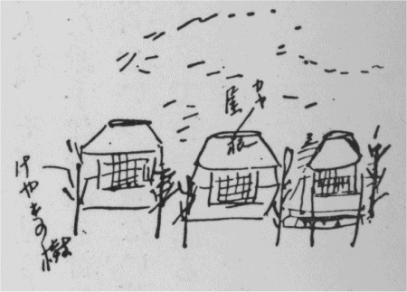
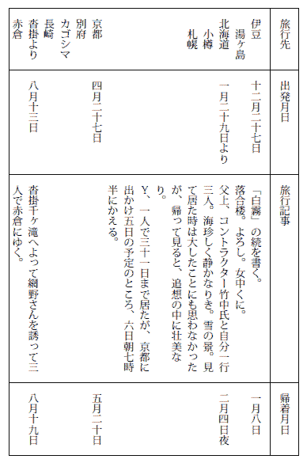

| 日記 | |
| 宮本 百合子 | |
| (2015) | |
日記
一九二六年（大正十五年・昭和元年）
宮本百合子
（金曜）晴
昨夜おそいので眠し。然し、今年からは九時起床の約束だから先ず起きる。女中が晴着を着て居るから、まあ正月という気がするが、大して元旦らしくもなし。まねのおとそ。雑煮、それでも色彩だけは仰山な口とりもつけて出した。起きたときは曇って居たがやがてよい元旦となる。小さい一人の男の子「新年おめでとう」「おやすみなさい」と教わったばかりと見えいく度もくりかえして居る声す。温泉宿での元朝は生れて始めての経験であった。年賀のハガキ。自分アドレスが分らずこまるところ沢山、わかって居るのにだけ出した。
（火曜）雨 寒
今日は仕事にて、モヤ一人放ぽり出し。
退屈まぎれに、しきりに方角を日記でしらべ、やっと甲
乙
丙
丁庚
辛壬
癸を発見した。
（金曜）
帰京。天気でよかった。汽車の中に、角力や義太夫をひいきにする大男、とりまきを多勢つれて、修善寺から乗る。
ああいう種類の男を見面白かった。
他に、男妾のようなものをつれた醜い、人の好い、情の厚そうな三十五ばかりの女など。
吉奈の東府やの主人、駅前の、舟橋がこわくて、自動車を降りたのは可笑し。ゴーゴリ的人格。汽車の中にも面白い男が居た。正月の旅行はそのような点面白し。
（土曜）
昨夜は汽車弁当ですまし、女中のないところにかえって来たのだから、今夜はゆっくり家で食事をしたいのに、自分林町のおよばれでホテルに出かけた。石橋夫婦［＃石橋和訓夫婦］
子供が客。
石橋夫人。平凡人。ひどい平凡人で、沢山描かないと云って小言を云う。彼のように生産的でもそういう不平をきくなら、他の人であったらどうだろう。
Artist's life is not easy in anywhere.
という。少し説教してあげたい位であった。
十一時頃かえり、門明かず困って居ると、Ｙ、かえって来。丁度よかった。花の茶屋というのに、秀雄と行った由、ほろよいで愉快そうであった。
（日曜）
今日は二人でエンジョウイしようとして外出。
（月曜）
自分、湯ヶ島から少し引きかけの風邪よろしくなく、とても工合がわるい。
熱はないのだが頭重く。床につく。
（火曜）
Ｙ、湿布などしてくれたので、（昨夜）少し工合よくなった。然し力なく、弱さを感じ。床に居る。
ひる間、一寸二人でカルタをする。自分この頃カルタがすきになり、じきしたい。やり方が判ったばかり故らし。Ｙこの正月は運よく勝つというのでよろこんで居る。
とし子を金山にやり、風邪で、原稿を、十五日までのばして欲しいと云ってやる。
（水曜）
夜、床の上に坐り、Ｙの紫檀をもち出して数枚書く。
（木曜）
一日仕事
（金曜）
仕事、夕刻仕舞い。とし子のかえるのに文芸春秋社まで持って行って貰う。
Ｙ、発熱、7.5
、床につく。クロボトキンの［＃「クロボトキンの」はママ］
「革命家の思い出」をよみはじむ。（Ｙ）
よろこび面白がって居る。
（日曜）
牛込南榎町に家があるという広告をＹ切りぬく。電話をかけて見たら、まだ約束出来ないというので行って見たが、ひどいひどい家、よくこれで貸し家と云えると思った。かえりに、野上さんのところによる。十一時頃までいろいろ話す。始め作のこと。互の。野上さんの話によると、あれはナポレオンが大きい一つの噓をつこうとして居るとき、ジョセフィンに小さい噓でまかれるという点をねらった由。そうきくと、面白い筈であったものが失敗であったことが明白になった。野上さん、この頃すっかり傾向が違った、という。狙う本質は違わないが表現が違ったのだ。野上さんはこの頃やっとリアリズムの本質にふれたと思うという。リアリズムというのがこの場合自分によく判らない心持がした。
「私は、描写ということが出来ないのね」Ｙ。「今頃其那ことでどうする！」とかえりに云う。Ｙの野上さんに対する感情不穏なものあり。Ｙはなぜ広く人がいれられないか。下のものには寛容、上のものにはやかましい性質。
（月曜）
この頃、疲労を覚ゆ。眠りたいだけ眠れないいやさ！
疲労のためにか、生活が暗し。
こちらに抵抗力がないので、Ｙの我ままその他気にさわる。
自分など、いくじのない奴なり。恒心がともすればあやうくなるなど。
きのう野上さんで見た呉昌セキ［＃呉昌碩］
の牡丹と水仙の画。忘られず。あのたっぷりさ、雄々しさ、自由さ。自賛に、描終自賞頗似十三峯、とあり。
（火曜）
南風の暖い、曇った――十一時頃になっても朝早くもやにこもって電車の音が聴える――ああいう天気であった。自分昨夜、夜中に目ざめ、なかなか眠れなかったので、朝おきるのがひどくいやであった。しかし已を得ず起き、佐々氏に電話をかけた。宅では診察しない由。眠く、床に入りたいが、Ｙ、下に気をつけるのはいやだよ、私はいやだよ、というのでそうも出来ず。二時頃寿子が来てから、Ｙ口やかましく小言を云って不快なので、瓜生にジアリン、臭剝
など買いにゆく。かえって来てから少し気分よし。護国寺に火事があり。内田氏の家の先へ見に行ったら、やけている家、火の子、立派に美しく見えた。「地獄変」を思い出す。
〔欄外に〕
『婦、公、』「大道無門」弴。この頃の弴の甘さよ！
ところが一月のはこれとは違ってよいよし。
如是閑［＃長谷川如是閑］
の、男女関係が、征服であったのを、平等な愛にまで高めたいという主旨の論文。よんで居るうちに悲しさを感じた。自分、今の生活にも、猶強弱の（性格的）圧迫、我まま、不公平、原始的さを感じることがある。もう五十年か百年か経ったら、性的生活はどうなるだろうとＹにも野上さんにも云ったが「同じでしょう」という。
（火曜）
父上より手紙、母上、先日ひどく弱って見えたので、何かあるのではないかと心配になり一寸あけられなかった。
見ると、二十九日に小樽にゆく。一緒に行ってもよしという。これはよい、これはよいと、Ｙに相談す。Ｙもすぐ賛成してくれる。たった一人ぼっちになる故Ｙは、京都に行ってもよいと云う。
（水曜）
事務所に電話をかけ、同行、おんぶで行きたい由をたのむ。
（木曜）
雄弁にやるものがあるので、あの坂の中途の犬のことを書いた。がよく出来すぎ。雄弁の『キング』には惜し。
又夜になってから、アイラヴユーを書いた。それをやることにする。
Ｙ、風呂たきをし、労力と費用と時間の浪費だと云っておこる。
もっともだが、私は決して銭湯には行かない。これはＹもわかって居るがやって見ると、それをつくづく感じ、おこるところ、Ｙらしくて面白し。夜Ｙ眠れず、二人で喋り、眠ったの三時すぎ。
〔欄外に〕
加藤首相、今朝急性肺炎にて逝去。
（金曜）
父上と午後一時の急行で北海道に立つ。同行、コントラクター竹中。
父上小樽三井銀行支店建築の用向を帯びて。
オテテコテンテンが鳴ったのでＹも目がさめる。下に来て、じぶくり。
「いやー、いやー」とじぶくり乍ら涙を出して居る。一緒に出かけ、Ｙ、さくや風呂タキのときこわした眼鏡なおさせに神田でおりる。却ってよく、元気になって居た。林町につくとすぐＹより電話。母上「毎日一緒に居て、まだ話すことがあるのかい、あきれたね、まあ」Ｙ、一人になる故、京都に行こうかと秀雄にきいたら、十日すぎにゆく由で中止にした。
〔欄外に〕
林町からクルマ廻して貰い、三越で買ものす。
（土曜）
午前六時すぎ青森着。
船、実に珍しくおだやかであった。
九時すぎ小樽着。中山夫妻［＃中山正直、本田道之の弟］
出迎。
青森でも吹雪いて居たが、海上以北晴れる間もない吹雪。
停車場より始めて橇にのる。
（日曜）曇 時々吹雪。
父上朝より竹中氏と外出。自分午後より俥橇にて小樽公園、水天宮、花園町附近に出る。スキー、思って居たほど見た目が愉快そうにもあらず、下手ばかりの故か。
雪景色は大抵単純。
室内に居ると、陰気だ。天光がささないから。北海道の冬がわびしいのは、雪があるからではない。雪をふらすために日光が人間の生活からうばわれるからだ。小樽見るところもうなし。明日一人でもよい、札幌に行こうかと思う。
（月曜）
十一時の汽車にて札幌に来る。小樽より雪尠く、ゴム輪の車通ず。馬橇はやはり沢山あるが。八重さん［＃バチェラー八重子、アイヌ］
にあげる※［＃丸井、90-2］
の切符を買い、父上の代理にて宮部氏［＃宮部金吾］
のところを訪ねる。家移り、北小路というところ、小さい教授連の家らしいもの多くあるところ、令嬢嫁し、博士全く独り、雇人と暮される由、或感動を与えられた。樹木多き札幌の雪は、小樽より風情多し。バチェラー、夫人昔ながらのキャップをつけ、相変らず好人物。バチェラーの妹という old miss、冷やかな、哀れな老婦人、笑いを知らず。八十二まで生きた母の世話をした後こちらに来た由、ああいう顔にもなるのが尤もなり。八重、肥え、よほど先より健康そうになって美し。快活にもなった。エクサイトし、手をやや暫く握ってはなさず。とめられて泊る。夜の祈禱に連ったが、一種不自然な習慣の惰勢
をその祈禱に感じ不快。八重、元のセンチメンタルな憂鬱は脱した。面白し、この変化。
（火曜）吹雪
十一時近くで小樽にかえる。八重、ステーションまで送って来てくれる。父上まちかね、丁度今おひるがすんだというところであった。バチェラー九時の汽車で来たと云って居たが越中やに来た由。仕事のために父上百円寄附した由。食後二人で正直を訪ね、市庁へゆき、三井銀行にゆき、歩き廻って帰宅。正直夕飯に来る。九時二十何分かのにて出発。函館に向う。
Ｙより手紙と電報、Ｙ到頭京都に来た由。
ヤッパリキタ 五ヒカエル ユアサ
〔欄外に〕
きのう、今日、汽車の中にて志賀直哉の「廿代一面」をよむ。
面白し。
（水曜）晴
六時十五分、函館つき。五島軒ホテルにゆく。部屋一杯の由、下の喫煙室でやすみ、三十日以来始めて愉快に出る湯で顔を洗う。
これも久しぶりの心持よい朝飯で、父上竹中自分、皆大よろこび、すっかり上機嫌になる。米沢人の骨董屋とかいうのを訪ねた。何もなし。市役所にゆき、小楠の兄などに会う。日本銀行の建築場を見る。竹中氏と別れ、二人であちこち歩き、又五島軒にかえって食事。竹中氏も二人手下をつれて来て食事。四時までロンジ・ルームに休む。自動車で港に来、五時出帆、珍しく静かな海なり。青森で竹中氏と別る。彼越後の令嬢のところに廻る。
〔欄外に〕
ハムズンをよみつづく。もう終りの方になって、captain の妻が、下らない若者の子をもったところ、及、それを夫に告げ、夫堪えようとして堪え得ず、終に夫人死ぬ。
生活のアンニュイから来る破滅
She had no child, but had a piano, no child. Nothing to do; 余り上々の作でない。
（木曜）晴
「妙ね父様、あっちに居たときはそうも思わなかったが、此那雪、何だか貧弱でいやね」自分本をよんで居る。父上、一寸武藤山治の『実業読本』をよみ、「さあ、少し御話を致しましょうか」自分、ひどいホームシックで堪らず。Ｙのことを思うと殆ど切なし。まあ今夜一晩の我慢だ、我慢！ 我慢！ と思う。
父上との旅行楽しく、竹中氏に、実に珍らしいお二方です、世間に滅多にない、と云われた程よい旅の道づれではあったが、自分にはそれだけでは欠けたものあり、Ｙ！ Ｙ！ と思う。切な心持。Ｋ上野に迎に出て居る。母上の口上「きのう国府津から帰ってつかれて居りますから上りません」上りません、珍しい改まりようだと大笑い。かえると髪しあげ。父上少しぐずついて居ると「あなた、もうあっちへいらっしゃい」愉快、又笑う。
（金曜）晴
朝早く起き、胸をドキドキさせ乍ら小石川にかえった。ダラ寝でＹはかえって居ると思ったから。門あかず。俥夫をまたせ、山岡にゆく。鍵なし。仕方なく俥夫をかえし、トランクを納屋に放りこんで山岡にゆく。十一時すぎ。三人でソバを食う。タイムテーブルを見るとあとは八時半九時半なり。夜の。そのあとの方で来るだろうと四時すぎまで山岡で昼寝をし、ステーションに出かける。精養軒で不味
い食事。売店で芥川の「支那游記」を買い読み乍ら待つ。九時半の、最後の一人まで待ってＹの姿見えないので涙が出た。タクシーをやとい林町にかえる。丁度小林［＃小林房次郎、中條家の書生］
Ｙよりの電報をもって、小石川に行ったところの由、あしたの朝七時半東京着。辛い辛い一日であった。こんなにもただ待つだけで一日潰した日は生れて始めてと思う。
（土曜）
よしに起して貰い、着物をきかえて居るところへ電話、Ｙよりという。長襦袢のままとび出す。廻ってつれて行って貰うことにする。三十分ばかりにてモヤー来。一緒にかえる。道殆ど喋りつづけ。嬉し、嬉し。やっと生きたようなり。
とし子を迎えにゆき、来させ、二人でひるね。二人とも、たった一週間別っこに居たと思われず永い心持がした。
Ｙ、父上から、家をたてる金、二千円位出して貰えることに話して来た由、夜そのプランなどについて楽しむ。
家をたてるということ、自分、嬉しさ、不安交々
にあり。
（火曜）
目黒によい家ありというので、見に出かける。行人坂下、迚も話にならず。
ああいう商売人、どんなに平気でうそをつくかということわかって世間学だ、モヤーの云う通り。
（水曜）
仕事どうとりついてよいかわからず。
苦し。
（土曜）
夜八時すぎ、御免下さい、女の声。障子をあけて見ると、大きな日本髪に結った女立てり。誰だったかと思い、「どなたでしたっけ」「北村です」「まあ珍しい」
モヤー私の部屋に居、「ほー、おあがり」十二時すぎまで話し、三人江戸川に出て小型自動車を見つけ、のせ、かえす。
途中酔っぱらいの土方、何かわめいて居る。私、北村、くっついて通りぬけ、モヤーその男が「庖丁一本持ってるぞ！」と威張って居るのを見た由。
（日曜）
Ｙ、昨夜の訪問客のために心持を揺られ落付かず。
どうしたものかと相談す。どうしたものか。それは結局Ｙの心持のすむようにするしかない。Ｙ、彼女がたった一人東京で、あんなにして居てはやがて立つ瀬のなくなるのを考え、じっとして居られない心持、いやさ、いろいろあるらし。
これから先、知人としてつき合ってゆくほど互に平静ならよし、そうでない以上きっちりする方がよかろうというＹの考。自分、うまくつき合ってゆけたら素敵と思うが、彼女の必要とするものを考えると何とも云えず。
（月曜）
Ｙ、今日も不安なり。
従って自分も落付かず。
（火曜）
Ｙ、散々迷った末、夜、北村の家へ出かける。会ってゆっくり、互の心持も話し、落付きたいと云って。寒い寒い夜。
Ｙ、じきかえって来る。留守で、いやな留守の婆が居た由。
却ってよかった。
Ｙの言葉。
（水曜）
モヤー佐々木病院にゆく。自分一緒に出て佐野病院にゆく。モヤー去年より、心臓妙に苦しくなり結滞する、それを心腎科で鑑定して貰うため。
モヤー何でもなかった。自分ただ nervous な丈。目出たし目出たし。かえりに本□
によって（赤門前）私のピアレス bed を買い、瓜生でジアリンを買い、（その前に燕楽で食事）かえる。伊藤氏一時より三時間も待って居た由、気の毒。夜、鈴木澄子氏来、トライアングル love についての苦しさの話。良人、硫酸をぶっかけるぞと云って脅迫する由。
「フム、いい御芝居だ！ 本牧夜話のようね、貴方小説なんか読まない方がいいわ」
（木曜）
今日よりやっと仕事にとりかかる。
（金曜）
今日、一時より会芳楼に、春江、Ｋ、母上をよぶ。春江の御誕生祝のためなり。
かえりに歯医者に廻る。
江戸川から、草履なのでうまく歩けず、関口パンで洋菓子を買い、そこへ来た乗合にのる。坂の途中でギャソリンの爆発不充分で車動かず。一人の巡査同乗、ショファー「すみませんが一寸車のうしろに石をかってくれませんか」巡査、下車。石をかい口を歪め、妙な顔をして戻る。
「いつも此那ことがあるのか？」「いいえ、一つの――の工合がわるいんで」「乗客を云々」「どうもすみません」巡査の威厳を失った自意識のあらわれた顔。
（土曜）
モヤー、ブブノワ。フンガイしてかえって来る。ブブノワ、始めて皮肉で、或娘の写真を見せて、この娘さんは利口だったとか、日本の女は利口で、真面目だが、目的をもたない、と云っ
たとか云った由。久しくロシア語をつかわなかったからうまく喋れなかったのだ。いやがり、ハルピンにでも行ってしまいたいと云い、しきりにその話をおそくまです。四月、会をやめたら行くという。私もいけと云う。
（日曜）
三沢氏来たが、郵便局駄目、むだ足。
「今日はいい天気ですよ」
そうきいたら外に出たくなって庭に下り、菊の新芽の上にのこった去年の枯枝などを折る。なるほどよい日だ。
耳鳴す。相談（モヤーハルピンにでも、まあ行くこと）出来たと思ったら、今朝
モヤー本当に行く？
何のこと？
昨夜の話
知らんよ
と云ったようなことになった。モヤー私一人で置くのが不安な由、左様、よくはないな、私にしろ。
〔欄外に〕
今日より、私下の三畳の bed にて眠る。
よし。
モヤーもよし。
二階では二人ねるにせますぎる。
（月曜）曇
歯イシャ
娘さん、学校の入学試験があったと云って、先生、治療して居るわきに来て話して居るのをきく、学制の不備にフンガイを感ず。
〔欄外に〕
ひるまで仕事。
やっと目はながつきかけてうれし。
臭剝きいて、ミミナリよくなる。
（火曜）曇
仕事。やっとよし。
三沢氏来。
モヤー、ブフノワに［＃「ブフノワに」はママ］
話すといって、『中央公論』正月号掲載の無産階級の文学（片上伸）論の梗概を話す。ロシア語で喋るのだから難しい。
（火曜）
Ｙ、大腸カタールを起し、工合よろしからず。
（水曜）
この月始めよりＹ、生涯のことについていろいろ考え、方針を立てるために心を労して居る。
会をやめてしまい、書くこと、語学など勉強しようと云う考えが、つよくわいて居る。つまり会の仕事を自分が馬鹿にしながらやって居るのはよくないからというつもり。
私は、どっちでもよい。Ｙが一生に一度、ああ力一杯やった！ と私が仕事をすましたときのようなあの浄められさっぱりした感じを味えばよいと思う。
（金曜）
今日で歎きのピエロなくなるというので、Ｙと銀座シネマにゆく。ピエロよろし。筋は甘いが。サーカスをとるところ、鈴をふり、太鼓をたたき、人々が笑いどよめき、舞台の上では、雑多な人間が、動き廻る。まるで感覚的で立体的で、短篇小説――都会の一瞬に、千も万も、タテヨコ、入り混る印象を主としたようなもの――は、こんなテクニックで書くとよいな、と思う。近頃よい見ものであった。
新橋演舞場へ行って中井さん、アミノさんに会い、三人で又歩き、中井さんを有楽町まで送って尾張町からタクシーでかえる。
（土曜）
昨夜歩いたの、Ｙによくなかった。
不快、臥床。
とにかく、家があるのは重荷とＹ云う。二人でも女中なしではやってゆけず、その為いろいろな不便があるからと。老松館はどうだろう。あすこならきっと落付ける。行って見て来てくれない？ 行って見る。所謂旅館の二階三部屋で食費とも百十円という。やすい。Ｙのりきでかりることにしたがる。自分まあ一遍部屋を見てからにした方がいいわ。
〔欄外に〕
自分も家はなかなかやっかいなり、何だか書生っぽになって居られず、細君⅔までだが――的で。しかしそれなら、と云うとやはり、この家に未練あり。この家はなかなかよいから。
（日曜）
『愛国婦人』のことで、秋庭氏来。大腸カタールの話が出、彼百日もわるかった由。
Ｙによき忠告を与えてくれる。
Ｙ不安だったところなので、おとなしく云うことをきいて、八日に中井さんを支那料理になどまねくことはやめ。
うちでたべるように、ハガキを出す。
（月曜）
昨夜、徹夜でしまう。
九十一枚、「苔」。
きょう中井氏が見えると云うので、すっかりすましてしまったのだが来ない由。
自分十時頃から二階にあがり、一気に四時すぎまで寝通した。
（火曜）
Ｙと老松館を見る。部屋が狭いし、どうか、とにかく又相談しなおしということになる。
Ｙの方針もかわり、会はやめず、自分の書くものをのせ、もっと積極的にやって行って見るようにすることになる。まあこれが両だめであろう。すぐ誰にもたのまず書いたものをのせ得る方便があるのだから。活字になって見ると、あらがよく見えてよろしい。
（水曜）雨
いやな日、ひるすぎ網野さん来、安藤、三沢、安成二郎、中井夫婦来。
網野さん泊る。始めて。
つかれ、話しすぎその他、自分よく眠れず。bed に来たいと思ったが、あみのさんが気にするといけないと思って我慢。
『新潮』の「浦島」をよもうとて、Ｙ、とし子に買わせる。広津の「白霧」評、合評、その他、Ｙフンガイしてもう「浦島」をよまず。Ｙ、私をヒイキにし、おこる。
合評会の云いぐさ、今に見ろ！ と思う。しかし客観性の足りなさは、自分として承認せざるを得ないと思う。私は一体客観性のあるようでない女なのだから。
〔欄外に〕
この日記、ずっと経ってつけて居、批評によって受けた心持変って居る。
「白霧」の二つの方がよくなかったとしたら、それは佃に対する心持より、あの作に対しての心持、つつしみの欠乏によったものと思い、閉口して居る。いい心持になりすぎ――まあ勢にのりすぎのような傾向、つつしむべし、つつしむべし。
（木曜）
Ｙの腸、さすが大腸カタールなり。はかばかしくなし。
不安であったり、何だ□
もう半月以上になるのにまだよろしからず。
床について居たので「大菩薩峠」を買って来たら、よむことよむこと、よむことよむこと。
（金曜）
老松館へ引越しは延期
Ｙの腸の工合並に動きたくなさから。
（日曜）
ピリニャークの「イワン・ダ・マリヤ」。
ロープシンの「黒馬を見たり」と自ら比較す。ステプニャーク、いかにも革命の中に青年となったらしき作品。
ロープシン、その前から生存し、違った生活の様式と、違った目標とで生きて来た人――ピリニャークは、革命状態が彼として知って居る生活そのものの全部で、他に life of today を知らない者。そこに二人の作家の違いがある。
ロープシン、理想をもたずに革命は見られぬ人、そこに悲しみ、英雄主義、センチメンタルがある。ピリニャーク、平たく現実と見る。辛くても何でも今日の生活とはこういうもの。――日本の作家がデーリーライフを書くそれと同じデーリーライフの書かれたもの。
ピリニャークは、非凡な作家か？ 技巧に於て。――全ロシアの揺れ動き、動乱を感じて居る人々の感情を描ける
点に於て。
「ユニークなソールではなし。」
○モヤーのお灸はじまり
（月曜）
仕事がすむと、雑誌などよむ。一寸はよし、然し、雑誌というもの、何と killing time として役立つだけのものだろう。沢山よむと徒
につかれる。
下らない、しかし書きようは知って居る小説の多いこと！ これが半年あと、それどころか！ 二十日後には紙くずのようになる。恐ろしいことだ。
いつも、遠い、大きい、揺がぬ一点を見つめて行かないと、現代はすぐ生存の足をすくう。一旦掬われたら、おだぶつ。新進作家の小器用さ、鋭さ、しかし規模の小ささ。自分の掬われて居る足許に心づかぬことが最大原因だ。
（火曜）寒
Ｙ、二階から下りて来。
「家はいいね――うちは」
という。ほら！ だから云うのだ。
◎とし子をかえす。三十円やる。
◎国男来。この頃彼の性格かわり、ひどくしまつやで、実際家で、よいあととり的になった。よしわるし。然しうまく生きては行くであろうからよしよし。
◎「ビュビュ・ドゥ・モンパルナッス」、ベルトという淫売婦、モオリスという情夫――女喰い、ピエールという小役人。全く、フィリップはこのような題材を、モウパッサンでも、ゾラでも、ドストイェフスキーでもなく扱って居る。生活の力がどんなに強い不可抗なものか、生存の恐ろしさ、かなしさ、人間のそういうものに対する生きものとしての従順さ。道徳的であって誰にも説教せず、肉慾を明るく美しく悲しく見るところ、よし。彼の温い平静なきどらない心は、独特だ。
（水曜）風つよし
この二三日八時前後に起床。日が永くゆっくり出来てよし。但、眠る時間を早くせねばならないのは辛し。とし子居ず。
自分で食事その他をやると、下宿へゆきたくなる。ただ下宿で、この家に居るような落付きが得られるや否や不安ではあるが。
夜、ソシオロジーをよむ。伊藤綾子来。
Ｙと仕事の話をし、京都並、祇園の生活をこれまでのどの人が描いたのとも違う書きぶり、見かたで書いたらさぞ面白かろうということを話す。Ｙはいろいろのことを知って居るから先導して貰って。
〔欄外に〕
『婦人公論』安成二郎が原アサヲ［＃原阿佐緒］
のことを書いた、「恋の見合」。
面白く心持よくよんだ。彼としてよい作と思う。弱くて小さい原に対する男の、よい愛があらわれて居る。その妙な小ささなどが。
彼女の周囲に男を引つけ、同時に彼女を不幸にもするのだと思う。
（木曜）
今日も風つよし。明るき日向、急に目立って来た硝子の塵、くもり。庭におくれ咲きの薹
のたった福寿草。草花が、剪り花ながら新陳代謝早くなり、じき水がくもるようになって来た。
（金曜）風 曇
はいしゃ。今日は金冠をかける下拵にて、エンジンひどく、疲る。
クープリンのチェホフの思い出をよむ。一寸
老松館には到頭ゆかぬことにきまる。自分すぐＹに雷同し、あとでこまる。これからは注意。
夜より降雪、淡い、水の多い春の雪。
（土曜）雪
昨夜、消え消え降って居た雪やまず。
一日降る。
ロシア語、一昨々日のところをやる。ロシア語は複雑でむずかしくていや。
Ｙ、書きかけのものを、こねて居る。何が出来るか。なかなか骨が折れるらしい。
「大道無門」失敗の作なり。惜しき才。
この頃朝大抵九時までに離床。台どころをやるのでつかれ、早く眠る。しかし、頭は何だか密度があらくなるようでいや。『時事』に広告を出して居た女中にハガキを書く。山岡何とも音さたなし。
〔欄外に〕
クープリン、彼は芸術家としてとび切りの一流ではなかった。何故？
彼の、チェホフの思い出にでもある一種の Sweet なところが、何か関係がありはしなかったか。
（金曜）
英男、東京高等の入学試験を通った。父上よりハガキにて通知。大いによろこぶ。
「役の行者」、初めて築地小劇場にて上演。ひどく評判よし。青山［＃青山杉作］
の役の行者。行ったが、満員で入れず。シネマギンザにゆき、ヤンニングスのラストマンを見る。ヤンニングスの厚手な、暖みのある、而して単純な心の老爺よくやって居た。ヤンニングスだけで見せるものだ。
（土曜）
三宅さんに送る小説十二枚終る。
「秋の反射」。
（月曜）
『日日』にて、Ａ、再び結婚したことを知る。
（火曜）
英男、国男、スエ子、春江、モヤー、自分。集って家で夕飯をたべた。英男の御祝のため。
今日は自分達が始めて一昨年、野上さんのところで会い、自笑軒へ行った記念日だ。早いもの。もう足かけ三年になった。あの時はもう単衣
羽織を着て居た。今年は寒い。
（水曜）
この頃の風には閉口。
アミノ、モヤーの古い西部という友達。夕方、とし子、Ｈ、Ｙ、Ｓ、なので、Ｙ、家で食事をするのをいやがり、三人で出かけ、海市［＃洋装店］
によってから甚兵衛。
銀座を歩く。
実にひどい、さむい風。
（木曜）
どうかして体グタグタ。とても起きるのが辛かった。午後、デンティスト。上一本抜く。今日も風。但、昨日よりやや弱し。
（火曜）
九州旅行に出立。
特急にて。
七時すぎ京都につく。
木原にとまる。
十時すぎ、たの、ぶす、秀雄君来。
池の寮というのに出かける。偉いさわぎ。よっぱらいの仲居、すごい有様。
（水曜）
木原
秀雄さん、おこと、四人で清水から河合卯之助氏のところへより、モヤ父上へのみやげ、その他買い、□
屋大一ですっぽんをたべる。かえって、ぶす、たの、夏踊の髪と顔で来る。二人とまる。Ｙにたのの着物きせ、おや出だと云ってふざける、はでな色彩、白粉けのないＹの顔に不釣合できたなく、哀れに見えて自分いやであった。
（木曜）
木原
都踊見物、ぶすが利巧で自分に近い方へ我々を座らせた。ノーエンにゆく。
〔欄外に〕
花見小路を走る人力車の後について、小桃万歳！ と叫びつつついて馳る学生あり。
（金曜）
木原
（土曜）
紅丸にて神戸から午後四時立つ。
別府行。
（日曜）
別府着。
（木曜）
臼杵に立つ
（金曜）
臼杵。
深田の石仏見物
（土曜）
臼杵。
（日曜）
鹿児島に立つ
日向の青島による。
（月曜）
鹿児島見物
城山。
集成館
夜十一時立つ長崎に向って
（火曜）
長崎着。
（水曜）
長崎
図書館 本や
（木曜）
長崎 福済寺
（金曜）
長崎、浦上、大浦
夜立つ
（土曜）
京都、夜着、十一時半。
（日曜）
京都
昇之助［＃豊竹昇之助、女義太夫］
を南座にてきく。楽屋始めて見る。
（月曜）
京都
ぶすの気取りと、いじわる。
円山公園に、秀雄、我々、たの、ぶすにて散歩。モヤーの兄上、昇之助、来。
（火曜）
京都。
京都座喜多村緑郎「婦系図」
大原。
（水曜）
京都立。
（木曜）
九州地方旅行より帰宅。
（火曜）
Ｙ、京都へ一人立つ。兄の問題にて。
自分、『文芸春秋』の仕事もあってゆけず。又ゆけても、今度は留守番をすべきコンディションあり。
縁側の机に出て仕事につき考えて居たが、フト気が向き、随筆のようなもの数枚かく。家じゅう、急に空気の流通が感じられるように、いやにからりとして淋し。これをしまう頃、国男、春江二人来る。よく来てくれたと、助った気持し。夕飯四人でたべ、十時頃まで居てかえる。国男、少々ヒポコンデリアの気味であった。夜 bed でねたが、何としても眠られず、異様な淋しさ、淋しさに追い立てられて二階へ上り、Ｙの床をしき、机の上で歌のようなものをかき、鷗外全集中短篇小説のホンヤクなどをよみつつ眠る。
ガスタヴ・ウィードの「尼」、「薔薇」、フローベルの「聖ジュリアン」、アナトオル・フランスの「舞踏」等。
フランスの皮肉さ。
（金曜）
すっかり仕事をしまい、菅氏へ送り出してしまう。辛かった。辛かった。
夜Ｙかえると思い、楽しみに楽しみに待って居たところへ、午後三時すぎて電報。ケサノリオクレタアスアサタツモヤー
がっかりし、泣き出したい位になった。
憤然とす、のりおくれるということがあるものか。本当にかえりたいと思ったら、誰がのりおくれなんぞする......と。
然し考えなおし、まあよいよいと思う。一日位当てがはずれて、斯うがっかりしては、我ながらたよりにならない。腹に力のない奴と思いなおす。午後渡辺竹中二人づれで来た。渡辺氏どうしたかひどく笑いはしゃぐ。
（日曜）
中村白葉氏からハガキで通知を貰って居た新町の家、見に出かける。散歩かたがた。曇天。すっかり雨の用意をして。渋谷へ降りると小雨。足駄役に立つ。家、なかなか広く、庭もよく心持よさそうだが、もうきまったかもしれぬという。今日中に返事があるから、まだだったら貸してもよろしいという。かりたいものと思う。かえりに、秋庭氏のところに廻る。遠い遠い。すっかりくらくなってからつき、持参の牛肉をすきやきにしてたべる。美味し。秋庭氏のような生活いいなと思う。――住、食など出来るだけ手軽く、カンタンにして、安々と暮す、暮し方。例えば、家屋のようなものも。
（火曜）
新町の家又見に来、かりるときめる。
（日曜）晴
駒沢新町へ引越す。馬力三台。手伝、林町より別府、宍戸、その他。
（水曜）
Ｙのロシア人の先生来。四時頃からのつもりだったら、二時に来、Ｙ、ひるねをしかけて居たところ、千世［＃お手伝いさん］
、「日本人ですか、西洋人のような方でございますね」という。大きな人故驚いたらし。
（木曜）晴朗 暑気きびし。
○仕事の為、一昨年の日記を出してよんだ。十月十三日のところ、母上対 Okabe の心持書いてある。それに対する又自分の心持など。あの頃から見ると、三年の間に、母も老られた。女性の四十八九歳という年頃。自分はその時代をどのように経過するであろうか。
○フロをたき乍ら、婦公、の武林文子の文をよむ。人世と闘い、あばずれて居るという感じ。然し何か心を動すところあり。
〔欄外に〕
私の六畳はなかなかあつし。鎌倉を思い出す。
昨夜Ｙ、ねしなに去年は十五日に秀雄が来、十六日に京都にかえったねという。
本当にそうであった。
（金曜）晴
九十一度。去年の今日は七十八九度であった由。なかなかの暑気。自分昨日より引つづき仕事の下拵え。今度のところは苦しい。――本当に正直にならなければならないから。正直になると、あることに対し、理想的結末を結び得なかった悲しみを新にするから。
Ｙ、あついあついとて何も出来ず、「アンナ・カレニナ」をよんで居る。
○自分一昨々日林町から帰ってからどうも胃の工合悪しく、今日、朝パン二片、ひるスープにパン一片、晩、飯一杯半という有様。
半ば暑気あたりらしい。
〔欄外に〕
大塩平八郎を、吉蔵［＃中村吉蔵］
かつて戯曲とする。今度真山青果又、全然違った見方であつかってドラマナイズしてある。作者の性格の違いが見えて面白い。吉蔵のは社会学的立場から、青果のは性格劇として見せようとして居るのらしいが、成功と云えず。神経質すぎ、こんな小器ではなかったろうと思う。但、養父の妻とリーベになったところなど、青果氏のつくりか。
（火曜）
午前からかかって午後三時頃やっとすっかり仕事が仕舞った。すぐ仕度をして、改造へゆき渡し、校正のことをきき、新橋でＹと落合うのを待つ。五時半というのにＹ、六時になっても来ず。ヒョイと自分の前に立つのでびっくりした。上で顔をそって居た由。色白くさっぱり美しくなった。暑いな。迚もね。活動なんか閉口よつかれて居るから。第一おなかがすいた。いくらある？ あの十円から四円引いた。竹川町からモーロー自動車で築地河岸へ涼みに行った。実にいい心持で、珍らしく、いい心持！ くれてから凮月で食事をし、山田わかさんのところに一寸より、二階のもの干しで涼み、かえったのが十二時、疲れ甚し。
（土曜）
東京を立ち、千ヶ滝の網野さんを訪ね、一緒に赤倉へゆこうということになった。
暑気甚しく、汽車にのって居て、ウスイにかかるまで、気がボーとなる位なり。
（木曜）［＃「（木曜）」は底本では「（本曜）」］
夜、赤倉からかえる。
（水曜）
赤倉ゆく前後から、ドストイェフスキーの「白痴」をよみ、白痴、ラゴージン、ナターシャ、将軍夫人、コーリヤ、アグラーヤなどの性格、あのように描く――いや、捕え感じ得るユニークな作者の力をひどく感じた。病的なほど鋭い。グレコの画のように歪み震え、赫燿たる美の光に貫かれて居る。彼の天才の直接法な、いやに真髄的な、こまかく深く無限に深く美に震える力を、羨望すること切だ。彼は感覚に於てトルストイより比較にならぬ近代人だ。近代人の捕え難い神経の震え、生存のなやみの一面を、ドストイェフスキーは活々と涙をこぼさせるほどに描き得よう。
（日曜）
ハムスン、シャロー・ソイルをよむ。大した作品ではないが、或種の所謂芸術家というものに対する鋭い批判がある点注目に価する。ハムスンが芸術並、芸術家というものにどういうメリットを置いて居るか、彼が理想家であることなどわかる。
生馬の「葡萄圃の中」をよむ。こんどの仕事の参考として。
この頃運動不足を感じ、夕方散歩したいしたい心持になった。が、一人でゆけず、髪を結ったりして気をまぎらして居たが、夕飯後、Ｙ、町へゆこうという。うれし。出かけ、変な活動の割引きで、チャップリンと、キートンのとち麵棒―― Seven Chances というのを見、かえる。気が変ってよかった。
（月曜）
残暑、相当にきびし。仕事にそろそろとりかかろうかと思い、原稿紙を出したついでに一昨年の六月頃Ｙが安積にくれた手紙を出してよみかえして見、感動した。その頃から見ると、私共の生活は想像もされなかった程度によく行って居るわけだ。この頃のＹは、もうあの頃の引こみ思案、自己の放棄、暗いあきらめなど、思い出すことさえ出来ないであろう。彼女は、ずっと単純に自然に生き生きして居る。うれし。
〔欄外に〕
この頃、ささきふさ氏のことを考え、妙にいじらしいみたいな、あわれみたいな、癪にさわるような心持を抱く。
面白し。何かにどうかして書いて見たい。
（水曜）
八時頃Ｙの部屋で訳して居るチェホフの手紙をよんで居ると、暗い玄関で人声がし、思いがけず網野さん来。私何だかぞっとした位うれしかった。小さい雨などふり、人が来などしようもない日であった故か。
作品の話、その他。十時おなかがすき、二人で食糧品やに行ってマカロニを買って来た。私それをゆで、二人でトマトケチャップでたべる。アミノさん泊る。
あの食糧品や、Ｙ大キライだが、可笑しい男だ。このマカロニどの位にふえますかときいたら「フランスのはふえますが、イタリーのは大してふえません。直観
したところはちがいませんが水分をふくみますから出
があります云々」
（木曜）
アミノさん一日居。『新潮』の方が十月でなく十一月になったというのでゆっくりして居よかった。
一日で、まるで秋らしくなった。美しい、澄んだ、磨いたような空気、さぞ今日など竹藪が美しいだろうと思って散歩を欲したが、アミノさん動かず。
「何だかぼんやりしてしまった」とくつろいで居る。
○伊藤綾子の母上死去の由、ハガキで「忙中乍ら御通知まで」と云って来た。母のこしらえたというカキモチなど貰ったこともあり、死んだ人に対しては別に悪感はもって居ないのだが、彼女の態度が何だかいや。こういう風な心持はどう処理するのがよいのか返事出さず。
（金曜）
この間しばらくぶりで野上さんのところに手紙を書いた。長く長く。返事が来た。Ｙ、さきに起き、よみ、「野上さんから手紙が来てるよ」「そうお、何て」「不愉快な手紙だ」なるほど、さっぱり朗かでない。何かある。何があるのだろう。――然し何故、皆が、まあとるに足りない。伊藤にしろ、林町ｍ［＃母］
にしろ、野上さんにしろ、長年の友達だのにＹの心持のしんを理解し、又理解したら好意をもたないのだろう。――勿論Ｙ、野上さんにはかなり皮肉な心持も抱いて居る。それが反射するのか。湯浅さんに云って下さい。
（土曜）
ひどいひどい。こんな大暴風雨には久しく会わなかった。
雨がふき込む。雨戸をしめたにつれて、子供の時分、荒れた日、縁側の雨戸が少しずつすかして閉められ、すき間からふきこんだシブキで廊下がぬれ、よく辷れたこと。
一年にもっと度々大洪水があったような気がすること。こわく面白く、大きな声を出して亢奮したことなどいろいろ思い出した。
Ｙ、「ジャングル・ブック」をよむ。自分よまなかった Kaa's Hunting などよむ。面白し。日本にこのような作家がせめて一人あってもよいと思う。ヨーロッパの豊富さ、一方にこのような物語の書ける作家があり、サイコアナリシスの作家あり、モーランあり等。日本なんか、やっと薄手の二色三色という気がしさえする。尤も、和郎が、批評（藤村、秋声の作品）のとき、このような人生に対する積極的、意志的理想主義の日本の文学が、廃頽の欧州文学に向って持つ価値というようなことは同感だ。
（月曜）
朝Ｙと一緒に出かけ網野さんのところに行く。二時頃まで喋り、北村へ行く。先生留守。助手に網野さんを紹介す。飯田橋でＹと落合い、吾妻橋までゆきツーリングで百花園にゆく。四日の大暴風雨の後なので、荒れ、まだ紫苑
なども咲かないので大してよくはなかったがお成の間の上からの眺望一寸よかった。雁来紅
、はちす、黄蜀葵、百日紅
、水引、その他。前川で食事（吾妻まで汽船で。白髯の長い橋、川の上の舟のポツリと赤い、青い灯、暗い空、稲妻、一寸印象つよい風景）。三人ともよく食べ、黒ビール美味かったが赤くなるのがいやでのめぬ。雨なり、又ツーリングをよんで、日本橋により、アミノさんのところまでかえって、一服。かえりに玉川電で雨。長く待合所のくらいところにサダ［＃お手伝いさん］
をまって居、こわかった。
〔欄外に〕
『光子』の出た心祝のつもりなり。アミノさん、十月までに奈良に行く故、東京のなごりがおしそうに見えた。
（火曜）曇
曇ってむし暑し。この間からやりかけの仕事しまう。又例によってよいかわるいか分らず。
不快なり、不快、不快（この心持、少し病的なところあり。）
昨夜アミノさんから借りて来た中川一政の『見なれぬ人』をよみ、感動した。就中
「父」など。自分の父母のことを思う。全く自分は生活感に於て縁なき子として生れたものだ。
オースティンの「プライド and プレジュデス」よみ始む。面白いし、うまいものだ。凡俗な女がいかにもよく描けて居、Mrs. Batchelor のこと、Miss Yae の会話など思い出した。日本の女、よく外国婦人の自由な生活とか、独立せる生活とか云って羨しがるが、母親の関心、年頃の娘の生活目標が young man にのみある驚くべき現象は、日本と同じか、或はひどい位なものだ。
但、現在ではどの位かわって来て居るだろうか？ そういう点について、何か面白い観察が外国に行ったら出来よう。
（水曜）晴ひどくむし暑し。
おきて、一寸本をよみ、午後林町に出かける。この秋からフランス語をやる決心。アテネ・フランセに行って見たら七日から始まって居、山田君に会う。いろいろきき、本を買ってかえる。月水金に出ることとなろう。林町に、春江、咲枝、緑郎等居。皆夏中の運動で日にやけ活々としてきれいに見えた。
（木曜）晴
起きぬけに父上と出かけ、クニオ、スエコ同行、三越にゆき、こまこました買物。丸善で Summer やホワイトアンキー買いたかったがなし、Ｙにたのまれたスミルニツキーの本もなし。Ａ１カフェーにて食事。方々で、スエ子自転車をきいたがなし。二時すぎかえる。スシなどたべ帰宅。七時。疲れ疲れがっかりした。眠りがたりなかったのと、皆のお喋りの故で。母上と、国男をいかに今後するかということで心持が衝突した。母上は岡田君に世話されたりしてはいや応なく job でも分け一生頭が上らない、それよりは、大沢の子と一緒に事務所に入れ、人に何といわれようと図々しく引立てて一人前にしてやるべきだという意見。自分は先の通り。Ｏ君に世話して貰い、一人前になって事務所に入った方が父も彼も心易いと思い、第一、父の事務所だから、子が入れば、入れてどうにかものにするのが（威光で）当然という公私混同した威圧的の態度がいやで殆ど腹立たしくなった。いかにも、中流の一代でよくなった家の者らしく、現在は、百姓や友人や親戚やと決してゆずり合わず守って資産など殖やし、次の代になる息子を、「図々しくかまえ」てまで push up しようとする根性、我親ながらたまらず。何故金は廻りもち、金は金、人格は人格と楽に考えられないのだろう。
〔欄外に〕
女の小ささ、成上りものの女房の方が亭主よりいやな理由よくわかる。――何でも不満。自由のきくことに拘泥した心持。
（日曜）
関さん、今泉静江。
（火曜）
八木さんのところへ
（金曜）
八木さん
（土曜）
『読売』と『時事』両方に書いたもの発送。
網野さん来、泊る。
（日曜）
朝おそく食事をして居るところへ三沢氏来、三人でやがて散歩。玉川へ行く。
（火曜）
ハイシャ、八木さん
（水曜）
きのうは実によい月であったから、たのしみにして居たら、今日はそんなによくない。よくないどころか月殆ど見えず雲が多くて。
（金曜）
ロシア歌劇、ボリス・ゴドノフを見る。
（土曜）
ハイシャ、八木さん
この頃自分野上さんのことを考えると苦しく心が重くなる。
自分がわるいのであろうか？ どこか？
野上さんの根気よいところ、忍耐づよいところ、それ等を私はどんなにか高く買って居るのだが、何だか窮屈で――彼女が高いところに居て、というより、狭く、人生にもうキメっ
て居、ガンコなところがある為――腹が立つところがある。彼女は、私の作品がＹの影響で自分とはまるで傾向を異にしてしまったと思うのだろう。ジッドの云い草ではないが、影響というようなものではない新しい一つのインスピレーションを彼女から得たというだけだ。勿論私は元のペダンや偏狭さ、自分だけいい気持の上品さはなくしただろう。然し私が下等になったのか？ いや！
（日曜）
スエ子来。中村白葉
〔欄外に〕
アンドレ・ジッドのシャルル・ルイ・フィリップ。
よいよみものであった。いろいろな意味で力をつけられる。
（月曜）
『新潮』にやる小説終る。きっちり三十枚
（金曜）
単行本にするのをすっかりよみなおして見ると、なかなかこのまま本には出来ず。特に始めの方よくないのが多い。書きなおし始める。もう二年も経つと大分自分の感情でも違ったところが出て来て居るから。
○これから永いものを書くときには決してこのように区切っては書かぬ。区切ると、一つのものとしてもよませる必要上あとになると重複してこまる。
（火曜）
八木さん、かえりにアミノさんのところへ廻る。
アミノさん今日奈良に立つなり。
（金曜）
八木さんヤスム
（日曜）快晴
関さん、三沢さん
九品仏に行く
この中に三体
ずつ、頭デッカチ
の金仏。
立派な古銀
杏、門から見
えた稲田の夕景色

（月曜）
八木さん休ム。
（火曜）
『サンデー毎日』のために日記五枚
「金色の秋の暮」
（水曜）
『女性』に書く仕事について考える。
この前、『新潮』にやろうとして書き出した海辺に三人の男女のこと、うまく行かなかったが今度書いても行くまい。モデルに意識があり、遠慮するから。それ故ヤメ。もっとずっと後にしよう。一つの大きなものの部分としてとって置こう。
この間の子供のエビハラのこと。あれを子供の側から書く。面白かろう。
午後になって林町から母上来とのデンポー。五時頃母上、スエ子、Ｋ来る。Ｙ、会へ行ってかえりに鳥を買って来てくれ、皆で賑やかに食べた。十時頃まで居てかえる。
（木曜）雨
昨日カブキの切符を貰い、Ｙと二人出かけた。鴈治郎スキでないが一度は見て居てもよいと。春江、Ｋも来て居る。
春江、Ｋに「あの背中にコブ背負った人ね、そばで見ると随分変てこよ」と云って居る。一人、古風な束髪にバラのカンザシをさし、派手な派手な着物を着て居た下町娘を評してなり。若い娘から少しふけた娘になる女の評言らしく。つまらないつまらない芝居。「女楠」愚の極、ああしか芝居に出来なかったのか。鴈治郎も自分の放蕩を生糸
で行って居るのは面白いが極めて詩趣なし。「十六夜清心」がよかったのを思い出す。却って「葛の葉」面白かった。
〔欄外に〕
Ｙ、「紙治封印切」を評して、上方の芝居は、舞踊が入らないから美くしくないと。
自分、ああいう情痴気分がいや。
二人の感じ方の差一寸面白し。これも
（金曜）
八木さん。久しぶりなり。今日は少し元気に見えた。今日はＹ少々腹工合わるし。ウドンを会でたべる由で、私一人九段下の例のスシやでたべる。この間Ｙと二人で行ったときには、大きいまま出し、今日は二つにきってある。たべよいように。二人男あり。戦のこと、軍隊のことを話す。「この頃じゃ軍隊でも我ママが出来るようになりましたからねえ、入ったとき宣誓をさせられる。ドンなことでも命令に従うっていうね。ところが、この頃はそんなにして入ったんじゃナイと云って印をおさない奴がある」「社会主義にカブレて居るんさ、電車んなかでも毛ばかり蓬々のばして。社会主義者大抵肺病ですぜ」云々。かえりに山本に廻り（改造）本のこと、新年号のことその他を打ち合わせ、ハイシャに廻る。今日ですっかりスミ。
三十五日。一年半越しなり。九十五円やすい。Ｙも落ち合い、見て貰った。
夜秋庭さん来。キレイなバラ、その他。
（土曜）大風
木枯吹きスサブ秋の暮。
さざん花。美し。落葉も美し。このような落葉今迄見たことなし。ポプラー、ザクロ、萩、楓、庭一面。
苅田さん［＃苅田
アサノ］
、ロシア語
Ｙ、日露芸術協会の集りがあり出るつもりのところ、ひどい天候なのでやめ。
○自分今日何だか少しヒスにて、不愉快なり。Ｙの我ママを感ズルこと、平常より敏し。
○久しぶりで日記をつけ、十月ナおし仕事ばかり［＃「ナおし仕事ばかり」はママ］
して暮したのを感ず。九月以後の日の短かさ！
○あした雨で誰も来ないといいナア。
〔欄外に〕
夫婦の生活でもよく仕て行こうとするには努力が必要。友人関係もそうなりと思う。女によい友達の出来ぬのは、ナグリもしないがなでてもやらぬという態度による。生活に入られることを防いで居るから。
（日曜）
Ｙ、腹がわるいとて臥床。
鈴木澄、大瀧龍太郎、木村秀吉。すみ子、すっかり膨れてひどくなって居るのであわれになり、自分金があったら、一月働かずに食えるだけの金を上げるがと思った。百円もあればよいのだろうが。こちらの金さえないのだから仕方なし。
（月曜）
Ｙのチェホフ、新潮で出すらしい。
どうなるか、
出すとよいな。
Ｙの自信のため
よいホンヤクのため
チェホフのため
我々のため――チェホフを愛する。――
ああ全くＹはもっと自信がなければいけないのだ。自信なしに生きられぬ人間のくせに仕事がまとまらぬので苦しがる。興味ある一人の女性なり。モヤーそうでしょう？ この本が出来ると、来年はいい年だな。
（火曜）
仕事、割になめらかにゆく。
Ｙ。今夜何年ぶりかにて田村とし子さんのところへ手紙を書いた。亢奮して「到頭書いちゃった！」と来た。
十七日に船が出る由。どんな返事が来るかしら？
アミノさん部屋がなくて家をかりた由。家では大変だが、瓦斯や水道があるそうだからよい。本当に落付くまでは大変であろう。
（水曜）晴
有馬さとえさんのところへ始めてゆく。
白金三光町の家。秋庭さんのところでよいバラがとられる筈のところなくて貧弱な花。天現寺で降り、川の上の線路をわたるときこわくて這いたい程であった。有馬さん、紫の襟、やはり紫がかった絹天の前かけ。毛糸でアンダ足袋。林ひろ子さん。一緒に住んで居るはっきり名のわからぬ令嬢、有馬さん、その娘がすきですきで、始めて家族というものを与えられたという心持。娘、こんどの絵のモデルにもなった。虎の門出の、ハイカラーで金があって、即興的情熱めいたものがあって不良的チャーミングさ。有馬さん、五時頃私がかえるとき、二人で送って来てくれ、三人で柳川で食事をす。Ｙやがてかえって来、有馬さんたちのかえったのは十時半。
有馬さんの今度の絵見れば見る程愛のこもった絵で殆ど涙ぐましくなるものあり。
「この人が来てからお金のことも少し考えなければならないようになったでしょう。くれにお金が来たらこの人に靴を買ってやって羽織をかってやって。」そういうこと、いかにも有馬さんの愛を示し羨しい位であった。
有馬さん、生活費のたしには、宝石箱などに金泥でミニチュアを書いて居る由。面ソウの細い細いのでかく。
（木曜）
Ｙ、体の工合大分わるくて苦しがって居る。自分『女性』の小説「一太と母」を徹夜で終る。
○Ｙの体はどういうのか。おキューをするといいのはフシギだ。気むずかしくなってグズグズいう。自分もナアバスになって居るから互にシャクにさわる。可笑し。
○夜仕事をしながら有馬さんに貰ったハガキを眺め、有馬さんの真心につき感じ幸福を祈った。
○「貧しき人々」素晴らし。エキスプレッションの自由さ――つまり作りものをする気でなく心の溢れるままに溢れる美。これが大切。
〔欄外に〕
Ｙのオキュー。体に沢山のおキューのあとがあるから、Ｙが万一外国で病気したらそのおキューを何とフランス語で云ったものかと夢現に考えた。ネシナニ。
（金曜）
『女性』に送る。「一太と母」三十二枚。フィリッポフのところへゆく。
○夜中に一時間もかかってＹのおキューをすえたりしたので朝になって眠り、つかれすぎた故か一寸変になって、目がさめたら二時。テンテコ舞をして会へ行ったが電車の工合わるくて四時。Ｙ、電車の中で「一太と母」をよむ。乙の由。Ｙの点カラし、二人でフィリッポフの部屋に行く。自分とめられてサンドウィッチの御馳走になり、郵便局へ廻ってかえって来る。Ｙは日露芸術協会の集りへゆく。
軽部さんが居てしきりに気焰をあげて居た由。
〔欄外に〕
八木さんへ、Ｙ一人ゆく。さくや三時すぎで九時すぎ。
僅かしか眠らないのにオキューで元気だとはおどろいた。
（土曜）
弘道会で辻村さんの論語と源氏があるのでＹと二人ゆく。始め、妙な式などするので、ムッテルが挨拶をし、山岡のお婆さんが妙な道徳論などするので、苦しい位きはずかしかったが辻村さんの講義は面白し。人間が一寸ありふれた女でないから。この頃、第四土曜も行きたいと思う。
かえりに渋谷でスシをたべて居たら、ケイオーの学生というの、中條さんではありませんかと云い、訪ねて来るという。キネマの、ナタリー・コバンコをあてにしてたのしみにして行ったのに、ナタリーを美しいドレイの女にしてカトランの王侯が救い出すというようなのでつまらず。コバンコをああ使うカントクの頭のわるさ。早々かえって来て眠る。
（日曜）晴 夕刻からひどい風になった。
お客、一人もなし。
Ｙと二人天狗俳諧をして遊ぶ。
アミノさんにハガキを書く。
（月曜）ひどい風 寒し
今日八木さんからかえり、野上さんに手紙を書こうかしらと思って元来た手紙などよみなおして見たところ、この間うち気にして居たようなことが感じられず。変な手紙書かないでよかったと思った。Ｙとして、然し、そんなに不快がることがあったのだろうかと云う心持さえする。Ｙ、Ｎ氏に好意をもって居るのにそのＮ氏が、Ｙと私との生活に祝福を与えず、あんな冗談みたいなことを云ってよこすので、それがひどくいやであったのだろう。その心持は分る。然し、Ｙは全くよい意味でもっと自信をもつといいのだ。弱い人だから、ナアニと思えず、その思えぬところを強気らしい表現であらわす。面白い性格だ。
小田来、活動の話をきいて行く。小田、プロフェッショナル談話筆記者、面白がって居るような風、又妙に感服したように一寸対手の言葉をくりかえすところ。など。
○ドストイェフスキーのギャチゴラーと「貧しき人々」とをよんだ。が二つとも何だかお仕舞いで一寸スポ抜けのようなところあり。マア字で云えばきっちり る
と納めてない。最後のところでフーとなって居。
（火曜）
午後ロシア語
後、林町にゆく。泊る。
ｍ、Ｙのことを実に云う。
（水曜）
一時頃から、白山銀行、瓜生、三越、玉やによって飯田橋のハイシャへ三時半にゆく。
Ｙそれからフィリッポフ。自分かえる。
「作者の感想」。
きのうから今日にかけて心持陰鬱なり。本当の勇猛心を失って居る。注意すべし。
（木曜）
一昨日あたりよりの風邪なおらず気分悪し。Ｙ、着物がないと云って困って居る故何年にもないこと、さだを手伝って少し縫う。表、裏など。あと袖を縫って袵
をぬって衿をつければよろし。
昨夜鼠がさわいで仕方ないので、サダのうちから猫をかりて来る。赤い紐を頸に結んでやる。名してミミという。
（金曜）
『不同調』の「百銭」終る、八枚半。
（土曜）
自分達猫このまず、苅田さんもキライ。
（日曜）
客来なし。夕方急に神近さんのところへ行こうと云い出したが住所がはっきりしないのでやめ。
アミノさんに永い手紙を書く。二人で。
五番町のところの楓、塵をかぶり乍らも美し。こちらはもう冬だ。市内は晩秋
〔欄外に〕Tess
（月曜）
テス――もう終りになったらよんでしまわないうちは仕事手につかぬ心持。四時頃かえってから夕飯までによんでしまう。
ハーデーの、社会のコムヴェンションに対する心持、運命に対する心持などよくわかり、テスの生活力の純な激しさ、そのつよさ、よわさなどよくわかり、つまり面白かった。が、というところあり。この作品にあらわれる著しき傾向はインテレクトがハートにサレンダーするのが人生だというような点、そして、重り重った運命が終にそれを運ぶ人間をクラッシュせずんばやまぬところ、大きな或ものを感じさせる。
〔欄外に〕
イギリスの farm folk の生活を知るにはよかった。
仕事
（金曜）
ロマン・ローラン「ヴェートウベン」、先によんだことがあったのを又よみなおして見る。
（火曜）
「牡丹」三十八枚。改造に送る。
Ｙの誕生日。生憎の雨だが、三沢、苅田さん来。夕方から一層ひどい雨になった。私何にもプレゼントなく、この間思いついて買っておいた Westminster だけがたそくとなる。夕飯は宍戸君と五人。すんだところへ秋庭氏来。
苅田、宍戸、三沢。三沢、宍戸君泊る。
（水曜）
邦楽座の義太夫。ひどい風で、松やのところでキリキリ舞をさせられた。
彼等が生活の一年。
三沢君と一緒に出かけた。
（木曜）
「心」をよむ。
サダを出してやる。
（金曜）
Ｙ、山内さんと新潮社へ出かけるというので十時までに新宿へ。自分九時前におきる。サダとまり故。
○Ｙ、印税にすること。
○三月一杯に原稿送ること等約束して来た由。
（土曜）
寒い。二人で外出。苅田さんと一緒に渋谷までゆく。Ｙの歯医者。神田の会芳楼。寄席、渋谷の前でスシの立ち食い。
「牡丹」の校正来る。
（日曜）
晴。Ｙ、おなかの工合をわるくした。少々フキゲンなり。自分何故かひどく疲労を感ず。Ｙのために四枚の小品書かねばならないが、うんともう一つのり出して来るものなくて閉口なり。
（水曜）
『愛国婦人』の小品を終る。湯ヶ島のこと。
（木曜）
『近代風景』、「白い翼」。
（金曜）
今日クリスマス eve. 故林町へ約束通り行く。Ｙはマーザンへ、鈴木、横田、画家を呼んで居る。ホテルに行くと云うが、この日から天皇の御容体わるし。いつ何事か起らぬでもないのに知人の多いホテルもいかが。やめて、家で食事し、十時半、玉川電でＹと待ち合わす。改札のところ寒い故、ボールドに、МОЯナカニ居ルとかいて置いたがＹ来ず。出て見たら、ストウブにあたって改札と話して居る。ボールドに面と向いつつ却って上にお芳さんと他の者の書いた字があったためよまず。大笑いす。
ラジオ十五分毎に陛下御容体を発表す。落付かず。Ｙ、雑誌の編輯上の必要もあって眠れず。自分もつき合う。
（土曜）
午前二時陛下崩御。
昭和となった。
自分いろいろに年号の換るのがいやだ。一九二六年でやってゆく方簡単でよろしい。然し字の感じ大正よりはよし。
（日曜）
スエ子、英男来。夜まで居てゆく。
自分、彼等をつれて秋庭さんの温室見物にゆく。Ｙ、今日は昨日のあとにて、一人で勉強したいだろうから。
かえり、サダと四人で須田町までゆき、眼鏡やに行ったがもうしまって居て駄目。Ｙのためにネマキのフランネルを見たがこれもなし。閉口した。
（月曜）
又外出。サダをつれてゆく。富士見町に家の広告を見たので、そのためもある。家はひどい家。
それから三越。やっとＹのきれあり。うれし、うれし。山本でのり。中力で食糧品、いそいでいそいで須田町まで来たら六時四十分から七時五十分まで陛下の還御のため切符は売らず。やむを得ずヤブで一寸おなかをこしらえる。Ｙ、一人で、どうして居るか、待ちかねて居るだろうと心配して来て見たらそうでもなし。よかった。
（火曜）
サダにネル、裁って貰い、二つの袖だけ縫った。
帯も新しいのがよいと切れをさがし紋ハ二重の茶色のにする。
（水曜）
起きぬけに山田さんから電話、家がある由。今日はもう出ず。大晦日についでに廻ることにする。
（木曜）
自分Ｙのためにこのようにしてものを縫い、縫ってきせることによろこびを感ず。ふしぎなものなりと思う。つくづく思う。
これにつけ、母がまだ若く、娘のためによい着物を縫った心持、それをきせてやった心持、又父のため、彼女がそうしたであろうことなど思い、今、母が何一つ縫わず、スエ子母の手縫いのものは一つも着ると云うことを知らぬのを思い、金の出来たということ、情味をころす点もあり、と思った。林町の生活は大ざっぱで、そう云う点に欠けた淋しいものあり。スエ子など、どういう女になるであろうか。
（金曜）
Ｙ、うちで仕事したいと云って居たが、午後から私一人買物に出ようとすると、一人で持てるかな持てるかなと云い、ついに一緒に出る。先ず四谷見つけで降り、山田さんのところへ行く。家を見る。二軒つづいた家、間取りわるくなし。ただ二階から見ると、墓しか見えぬ欠点あり。三越に行く。もう何もなし。大嵐の後のように塵のかかった売れのこり品だけ。塩町の通りで、細々買物をしつつ。二人考え笑った。何故今夜限り何か人生が変りでもするようにこうやって食物などでも買いこみ、せわしく、自分等のようなものまで歩くのであろうか、と。かえってから、お煮しめその他し、床についたのは四時。
〔欄外に〕
Ｙ、私の縫ったネルのねまきに新しい兵児帯をしめ、大満足なり。自分キモノ縫ったの、もうこれで何年ぶりか。

底本：「宮本百合子全集 第二十四巻」新日本出版社
１９８０（昭和55
）年7
月20
日初版
１９８６（昭和61
）年3
月20
日第4
刷
※底本は、物を数える際や地名などに用いる「ヶ」（区点番号5-86）を、大振りにつくっています。
入力：柴田卓治
校正：青空文庫（校正支援）
２０１４年9
月11
日作成
青空文庫作成ファイル：
このファイルは、インターネットの図書館、青空文庫（http://www.aozora.gr.jp/）で作られました。入力、校正、制作にあたったのは、ボランティアの皆さんです。